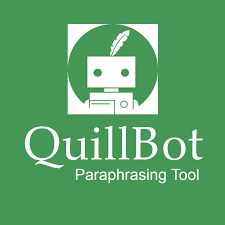
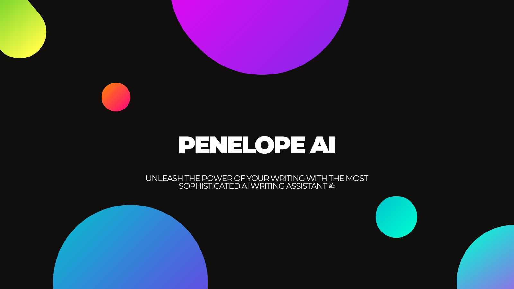
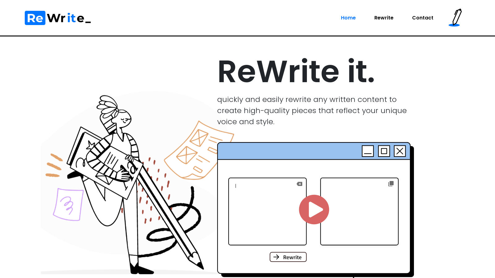
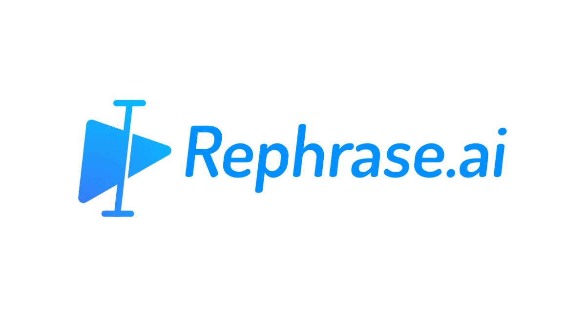

Browse 7+ Best Praphrasing Tools
QUILLBOT
QuillBot AI is an innovative and powerful natural language processing tool that has gained recognition for its exceptional paraphrasing and text revision capabilities.
Leveraging advanced machine learning algorithms, QuillBot excels at rephrasing sentences, paragraphs, and documents while maintaining context and readability.
Its user-friendly interface and integration with various applications make it a valuable asset for writers, students, and professionals seeking to enhance the clarity
and coherence of their content. QuillBot AI's ability to swiftly generate alternative versions of text with minimal effort has positioned it as a go-to tool for improving
writing efficiency and quality across a wide range of industries and educational settings.QUILLBOT.
PENELOPE AI
Penelope AI is a chatbot that was created by Meta AI to assist users with their customer service needs.
It uses natural language processing (NLP) to understand and respond to user queries, and it can be integrated
into various messaging platforms such as Facebook Messenger, WhatsApp, and Slack. Penelope AI is designed to provide
quick answers to common questions and to help reduce the workload of human customer support agents.
PENELOP AI.
REWRITE AI
 Rewrite AI is a subfield of artificial intelligence that focuses on the ability of machines to rewrite and restructure text,
images, and other forms of media in order to improve their clarity, coherence, and effectiveness. This technology has numerous
applications, including language translation, text summarization, and content generation.
REWRITE AI.
REPHRASER AI
 Rephraser AI has a user-friendly interface that allows users to easily input their text and receive instant rephrased suggestions.
The tool employs a combination of rule-based approaches and machine learning models trained on large corpora of text data.
It analyzes the syntactic structure, semantic meaning, and contextual information of the input text to generate accurate and
coherent rephrasings. Rephraser AI can handle various types of sentences, including complex ones with multiple clauses or ambiguous
meanings. It also considers stylistic preferences and can generate rephrasings that match specific writing styles or tones.
The tool provides users with multiple alternative suggestions for each sentence, allowing them to choose the most suitable
option based on their needs. Overall, Rephraser AI is a reliable and efficient tool for anyone looking to improve their writing
by generating high-quality paraphrases.
REPHRASER AI.